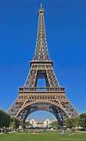
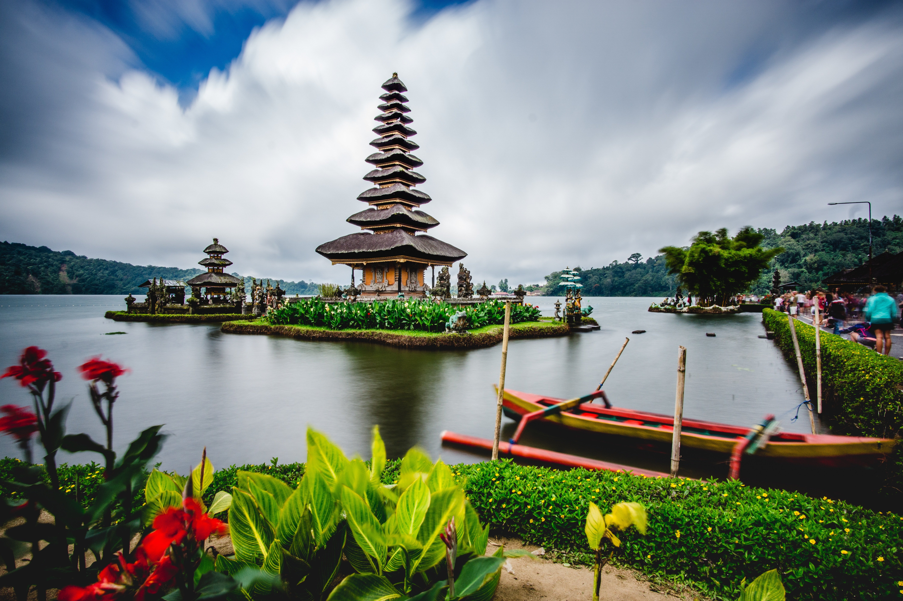
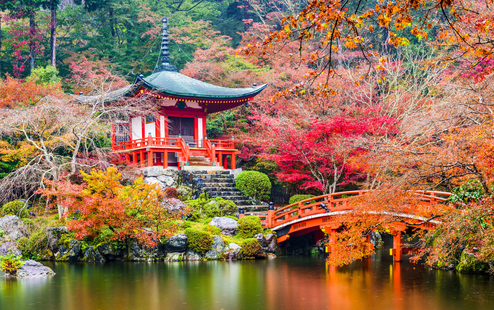

Exploring Paris, France
Discover the beauty of Paris, from the Eiffel Tower to its delicious cuisine.

Discover the beauty of Paris, from the Eiffel Tower to its delicious cuisine.

Enjoy the stunning beaches, temples, and culture of Bali.

Experience the traditional temples, gardens, and delicious food of Kyoto.